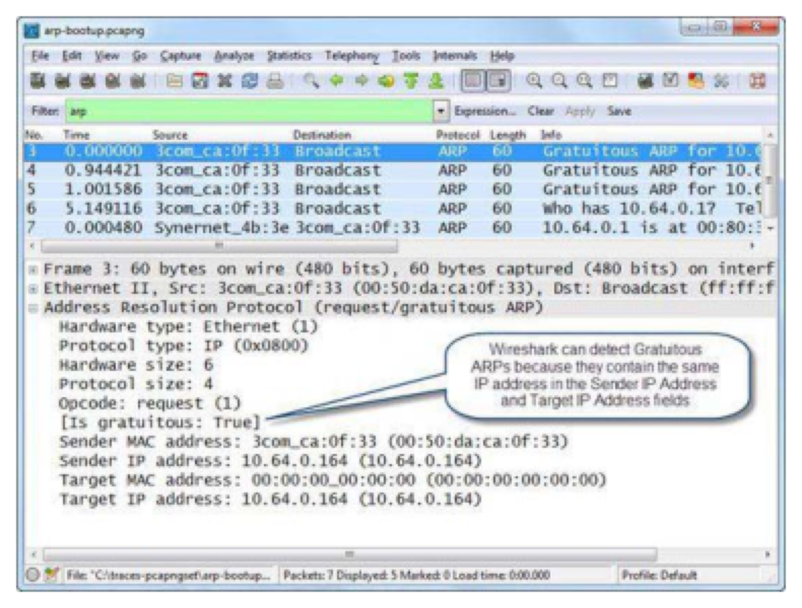
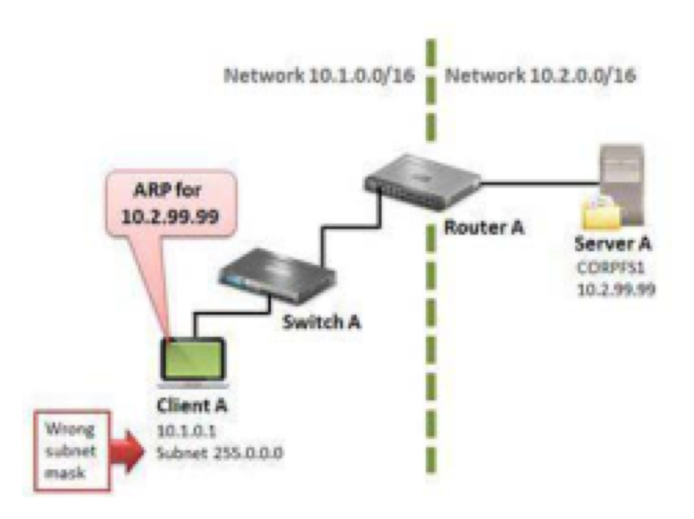
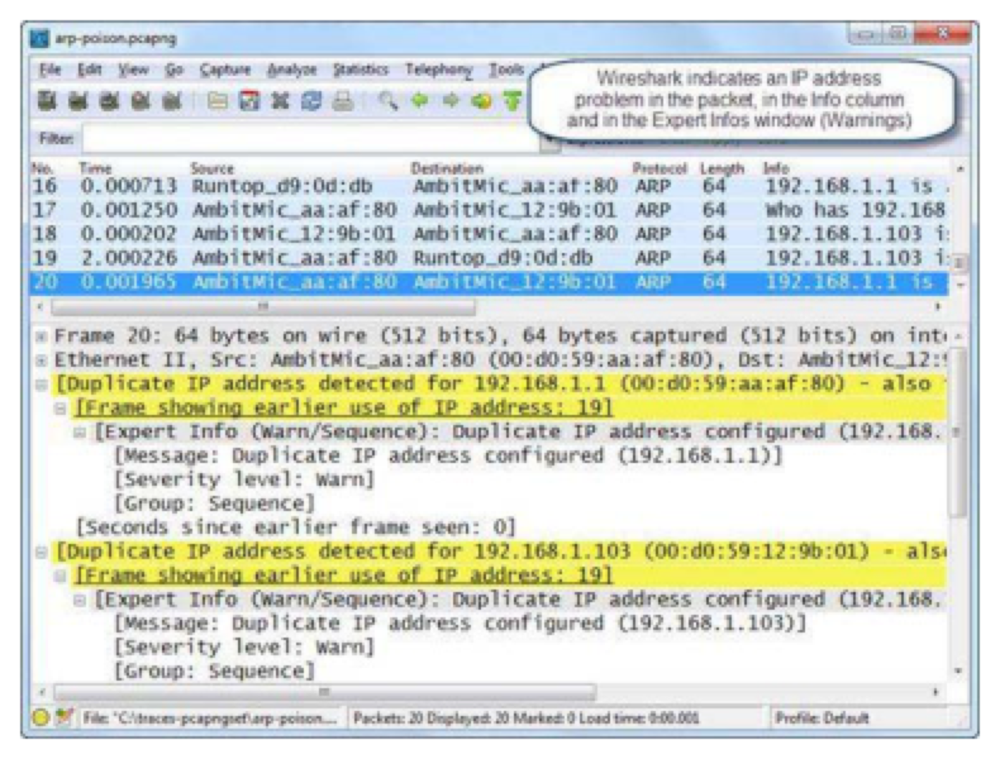
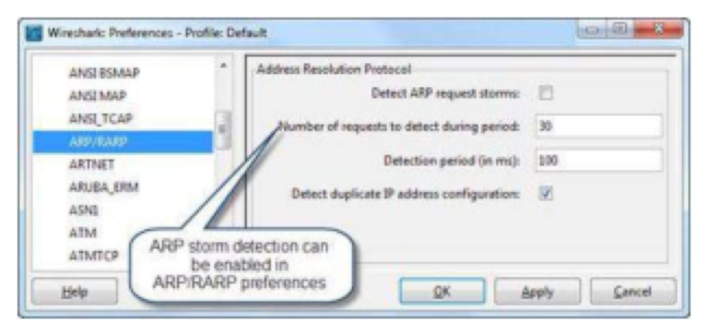
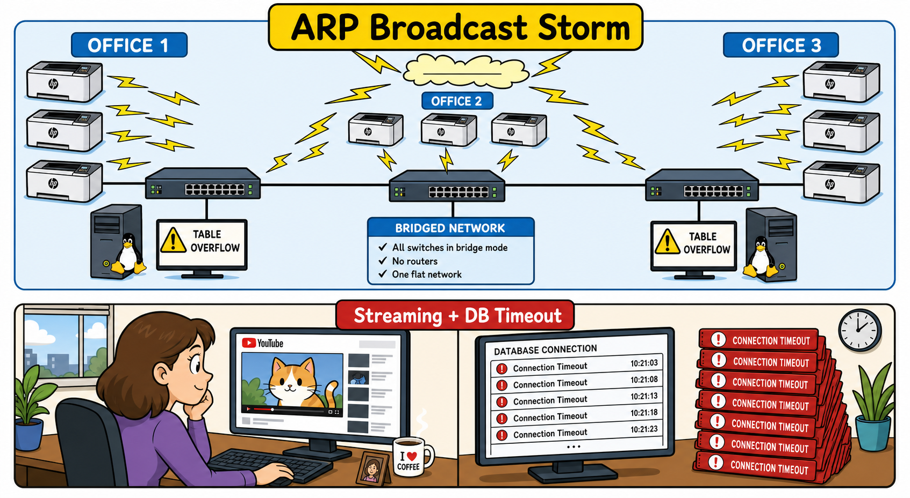
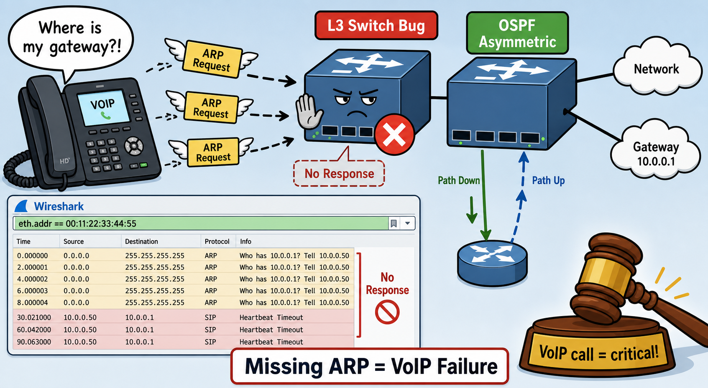

ARP packets do not have an IP header. What two important consequences does this have — one about where you must capture to see ARP traffic, and one about where ARP packets can travel?
In an ARP request, the sender puts its own hardware address and IP address in the sender fields, and puts all zeros in the target hardware address field. In an ARP reply, what changes in the sender and target fields?
Identify the Purpose of ARP
ARP is used to associate a hardware address with an IP address on a local network and to test for duplicate IPv4 addresses (gratuitous ARP process). As simplistic as ARP is, it can signal problems with network addressing or configurations. ARP is defined in RFC 826. ARP is not used in IPv6 communications — ICMPv6 handles duplicate address detection instead.
ARP packets are unique because they do not contain an IP header. This means ARP packets are non-routable — they cannot cross routers.
Analyze Normal ARP Requests and Responses
Normal ARP communications consist of a simple request and a simple response. A host sends an ARP broadcast that includes the target IP address (but no target hardware address — that's what is being resolved). Figure 194 shows a host with hardware address 00:50:da:ca:0f:33 and IP address 10.64.0.164 looking up the hardware address for 10.64.0.1.

The response packet (Figure 195) now contains the sender IP address 10.64.0.1 and the hardware address for that device. Note the convention: sender and target addresses are associated with the current packet sender. In the request, sender IP = 10.64.0.164. In the response, sender IP = 10.64.0.1 (the responder). The original requester is now listed as the target.
A host sends at least one gratuitous ARP when it boots up or receives an IP address. What exactly is a gratuitous ARP, and how does a response to a gratuitous ARP indicate a problem?
Wireshark can detect duplicate IP addresses — you can also see this in the Packet List pane. Where in the Expert Infos window do duplicate IP address detections appear?
Gratuitous ARPs
Gratuitous ARPs are primarily used to determine if another host on the network has the same IP address as the sender. All hosts send gratuitous ARPs regardless of whether their IP address was statically or dynamically assigned. Wireshark can identify gratuitous ARP packets.
In Figure 196, a host is checking if another device is using the IP address 10.64.0.164. An ARP display filter has been applied and the Time column set to Seconds since Previous Displayed Packet. The host sends three gratuitous ARP packets, waiting approximately one second between each attempt.

After the third attempt and another one-second delay with no response, the host can begin to initialize its IP stack. If a gratuitous ARP receives a response, another host is using the desired IP address. This typically generates a duplicate IP address alert on the probing host, which stops the IP address initiation process.
ARP poisoning (man-in-the-middle) shows one MAC address advertising multiple IP addresses. Looking at the ARP opcode and the sender hardware/protocol address fields, what specific filter would reveal an ARP poisoning scenario where a host at MAC 00:d0:59:aa:af:80 claims to be both 192.168.1.103 and 192.168.1.1?
Proxy ARP allows a router to answer ARP requests on behalf of devices on other networks. What are the disadvantages of Proxy ARP, and what display filter would detect proxy ARP responses?
ARP Problems & Packet Structure
Analyze ARP Problems
Network addressing problems can cause ARP issues. In Figure 197, Client A has been configured with the wrong subnet mask (255.0.0.0 instead of a shorter mask). When Client A goes through the resolution process for Server A at 10.2.99.99, it incorrectly determines the server is local (both on network 10.0.0.0/8). Since ARP packets are non-routable, they will never reach Server A.

ARP poisoning traffic looks unique. In Figure 198 (arp-poison.pcapng), Wireshark has detected that duplicate address use has occurred — a host at 00:d0:59:aa:af:80 is advertising both 192.168.1.103 and 192.168.1.1. This is the classic signature of ARP-based man-in-the-middle traffic.

Wireshark's duplicate IP address detection can be disabled in the ARP/RARP preferences. You can also enable ARP storm detection: Wireshark looks for 30 ARP packets within 100ms before triggering an event (Figure 199).

ARP Packet Structure
There are two basic ARP packets — the ARP request and reply — both using the same format:
| Field | Description |
|---|---|
| Hardware Type | Data link type. Type 1 = Ethernet (6-byte hardware address length) |
| Protocol Type | Network protocol type. Same values as Ethernet II frame structures (e.g., 0x0800 = IPv4) |
| Hardware/Protocol Length | Length in bytes of hardware (6) and protocol (4) addresses |
| Opcode | 1=ARP request, 2=ARP reply, 3=RARP request, 4=RARP reply |
| Sender Hardware Address | MAC address of the device sending this request or reply |
| Sender Protocol Address | IP address of the device sending this request or reply |
| Target Hardware Address | Desired target MAC (all 0s in requests; filled in for replies) |
| Target Protocol Address | Desired target IP in a request; requester's IP in the reply |
ARP Display Filters
arp All ARP traffic
arp.opcode==0x0001 ARP requests only
arp.opcode==0x0002 ARP replies only
arp.src.hw_mac==00:13:46:cc:a3:ea ARP from specific MAC
(arp.src.hw_mac==00:d0:59:aa:af:80) && !(arp.src.proto_ipv4==192.168.1.1)
ARP from MAC not claiming its own IP (poisoning indicator)
(arp.opcode==0x0002) && !(arp.src.proto_ipv4==192.168.0.1/16)
Proxy ARP response (remote IP being resolved locally)
Case Studies
During an Infosec gig at a large grocery chain, one of the things encountered was a packet storm coming mostly from HP printers. They would start ARP requesting, and after a time, the whole network was ARPing up a storm — so much so that Linux boxes had their tables flooded out.
The reason: the person who designed the network had configured all the Cisco gear as one big bridged network between all sites. All that lovely Cisco gear — paid for by public money — and it was all bridged! Every ARP broadcast was propagating to every location.
Later they also had issues with people using streaming clients — secretaries listening to music or streaming YouTube videos. The real effect was that client connections to useful things like backend databases would time out. When they'd call support the vendor would not be able to figure it out — this was especially exciting during billing and payroll time.

A large law firm experienced problems with their VoIP system — calls were disconnected or the other party stopped hearing them. This is a problem when it happens while talking to a Judge in his limited time.
The company WAN+LAN infrastructure was new, oversized and totally redundant. No apparent reason for packet loss or failing VoIP calls. A review of the L2/L3 implementation resulted in minor improvement points but nothing explaining why IP phones lost their connection to the VoIP server every once in a while.
After capturing heartbeat traffic and correlating with VoIP server logs, a recurring and disturbing pattern emerged. Filtering on one IP phone's MAC address at the time of disconnect revealed: the IP phone was sending ARP requests for its gateway address — but no response came from the L3 switch. After several unanswered ARPs, the IP phone stopped sending heartbeats. It simply didn't know who to send data to anymore.
After a while, the L3 switch would start responding to ARP packets again. The IP phones connected. Then the L3 switch stopped responding again.
Root cause: the L3 switches were running a proprietary router redundancy protocol that did not handle asymmetrical routing. Since OSPF routing could deliver packets on either of the L3 switches, asymmetrical routing was inevitable. The switch vendor had to fix its router redundancy protocol implementation.
Lessons learned: Assume nothing, expect anything — and always look for (missing) ARP packets!

Basic ARP is used to resolve the hardware address of local targets. The ARP process examines the local ARP cache first before generating an ARP request. Both ARP requests and responses use the same packet format — a typical ARP request is sent to the data link broadcast address while responses are sent directly to the hardware address of the requester.
Gratuitous ARP is used to detect duplicate IP addresses on the network and must be performed by IP hosts regardless of whether their IP address is statically or dynamically assigned. ARP packets are non-routable because they do not have an IP header.
Review Questions
ARP is used to obtain the hardware address of a target host or gateway/router on a local network.
If a client's subnet mask is too short, it may think more targets are on the local network and broadcast ARP packets to resolve the hardware addresses of those targets. For example, if a client with IP address 10.2.4.5 has a subnet mask of 255.0.0.0 instead of 255.255.0.0, it will ARP for any target with an IP address starting with 10.
ARP packets cannot be routed because they do not have a routing (IP) header. Routers examine IP headers to make forwarding decisions — without an IP header, the router cannot forward the packet to another network.
Capture filter: arp. Display filter: arp. Both use the same simple syntax.